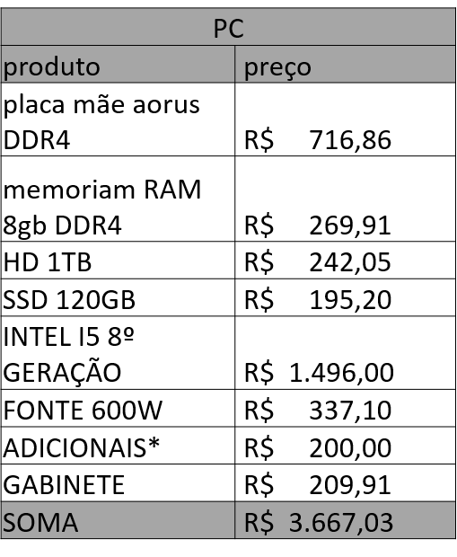
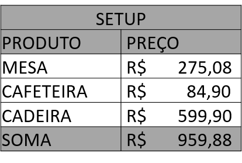
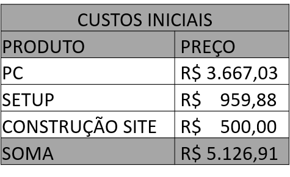

Como toda empresa, a Coelho Branco precisa de um investimento para seu inicio.
Como pode ser visto nas tabelas, será necessário um Desktop, um Setup incluindo uma cafeteria
(porque nenhum programador trabalha sem café) e a construção de um site.
A fonte dos valores pode ser verificada clicando aqui.


